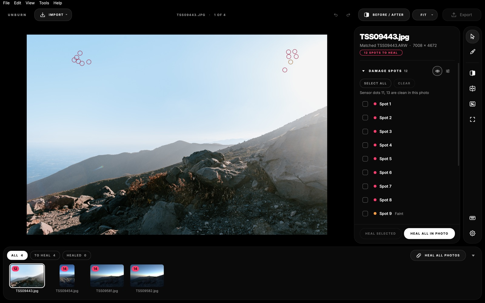
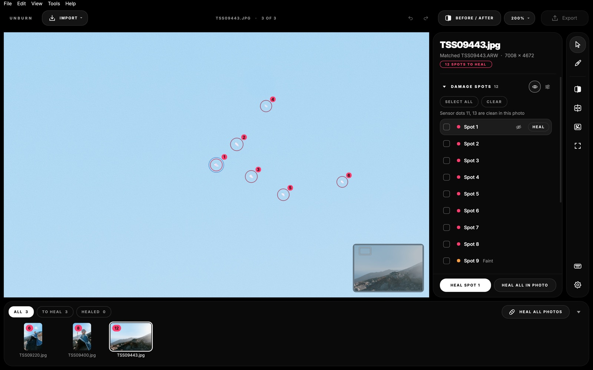
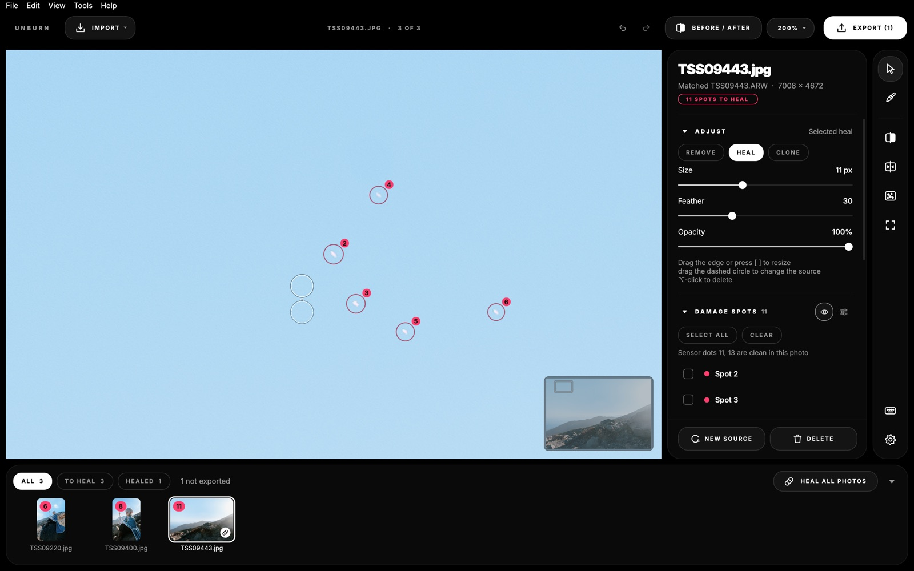
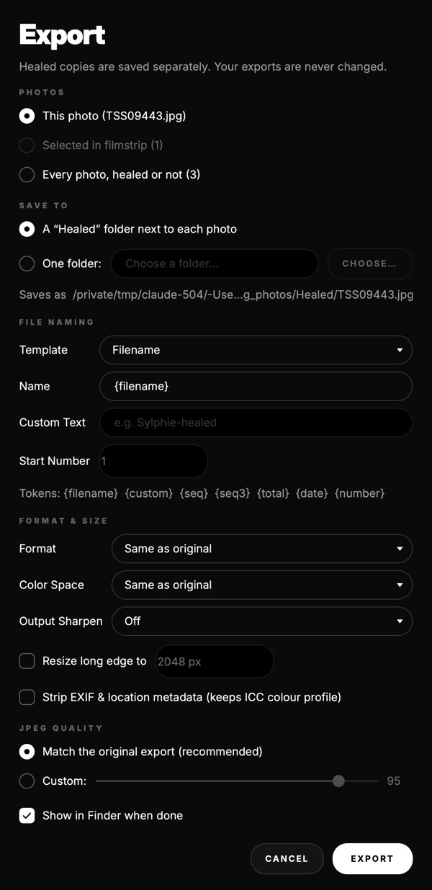

When concert or club lasers burn your camera sensor, the damage sits at the exact same spot across every photo. Unburn automatically detects, aligns, and heals every dot across your entire shoot without touching your original RAWs.
Drop 15–40 RAWs from any shoot or 5–10 defocused test frames. Unburn learns your sensor's damage profile in under a minute.
Every tool, shortcut, and pixel pipeline designed for real-world high-volume workflows.
Matches each export to its RAW or inverts Lightroom's lens distortion polynomial so it knows exactly where your sensor is damaged, even on cropped or resized shots.
Heal a single spot, a photo, or your entire shoot in one go. Edge cases automatically fall back to content-aware boundary reconstruction.
Includes a built-in Sony a7 IV profile, plus a calibration wizard supporting 25 RAW formats across Canon, Nikon, Sony, Fuji (Bayer & X-Trans), Olympus, Panasonic, Pentax, Leica, and Hasselblad.
Healed copies are written to a dedicated folder in your chosen format, ICC color profile, and naming convention. Your source exports and original RAWs are never altered.
When RAWs are offline or missing, Unburn matches via XMP tags or rigid constellation geometry, and honestly flags ambiguous crops so you can check them by eye.
No cloud uploads, no account requirement, and zero telemetry. It strictly reads local files and never downloads cloud-only placeholders.
Built with full Lightroom shortcuts, dark theme, and high-DPI Retina support.

Filmstrip overview with batch damage indicators

Inspector close-up view with keep-out overlay protection

Lightroom-style Heal, Clone, and Remove modes

Full color space conversion, sharpening, and metadata control
Unburn.app in Applications and choose Open, then click Open. On macOS 15, if prompted with Move to Bin, go to System Settings ▸ Privacy & Security and click Open Anyway.Stop manually stamping out the same 14 dots on 400 photos in Lightroom.